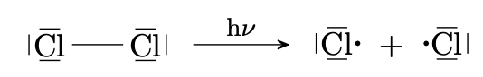
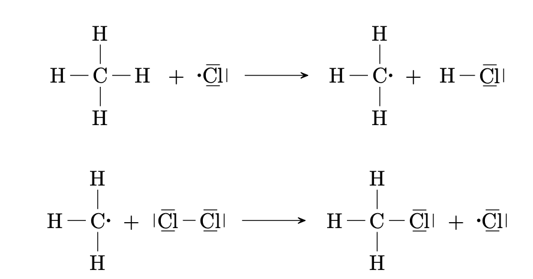
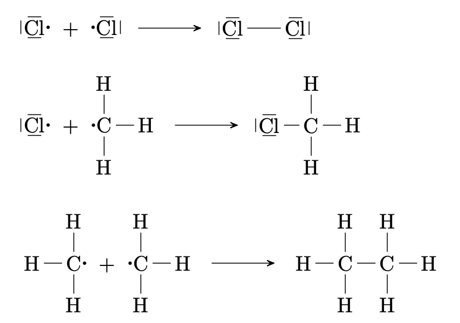

Alkane
Kohlenwasserstoffe
Kohlenwasserstoffe sind Verbindungen, deren Moleküle nur aus Kohlenstoffatomen und Wasserstoffatomen bestehen.
Alkane
Alkane sind gesättigte Kohlenwasserstoffe. Die $\ce{C}$-Atome in Alkanen sind nur durch Einfachbindungen untereinander verbunden.
Homologe Reihe der Alkane
Name |
Summenformel |
Halbstrukturformel |
Skelettformel |
|---|---|---|---|
Methan |
$\ce{CH4}$ |
$\ce{CH4}$ |
- |
Ethan |
$\ce{C2H6}$ |
$\ce{CH3 - CH3}$ |
- |
Propan |
$\ce{C3H8}$ |
$\ce{CH3 - CH2 - CH3}$ |
- |
Butan |
$\ce{C4H10}$ |
$\ce{CH3 - CH2 - CH2 - CH3}$ |
- |
Pentan |
$\ce{C5H12}$ |
$\ce{CH3 - (CH2)3 - CH3}$ |
- |
Hexan |
$\ce{C6H14}$ |
$\ce{CH3 - (CH2)4 - CH3}$ |
- |
Isomerie
Isomere sind unterschiedliche Moleküle welche die gleiche Summenformel besitzen. Sie können durch unterschiedliche Strukturformeln dargestellt werden.
Strukturisomerie
Isomere, die sich in der Abfolge der Bindungen im Molekül unterscheiden bezeichnet man als Strukturisomere oder Konstitutionsisomere.
Nomenklatur
Bemerkungen
Die Nomenklaturregeln der IUPAC (International Union of Pure and Applied Chemistry) ordnen jedem Alkan einen eindeutigen Namen zu.
Regeln
-
Die Hauptkette ist die längste Aneinanderreihung von $\ce{C}$-Atomen im Molekül. Sie bestimmt den Stammnamen des Alkans.
-
Die Kohlenstoffatome der Hauptkette werden so durchnummeriert, dass die erste Verzweigung auf dem Kohlenstoffatom mit der kleinstmöglichen Zahl sitzt. Bei Gleichheit bestimmt der nächste Substituent die Richtung der Nummerierung.
-
Die Seitenketten auch Alkylgruppen genannt oder Substituenten werden benannt:
Erklärung
Substituenten sind Atome anderer Elemente
Seitenkette Name $\ce{- CH3}$
Methyl
$\ce{- CH2 - CH3}$
Ethyl
$\ce{- CH2 - CH2 - CH3}$
Propyl
Allgemein
$\ce{- (CH2)_n - CH3}$
Alkyl
Multiplikative Prefixe
Bei Mehrfachnennung wird die Anzahl durch Zahlworte angegeben.
Zahl
Numerisches Zahlwort
1
mono, hen
2
di, do
3
tri
4
tetra
5
penta
6
hexa
7
hepta
8
octa
9
nona
10
deca
Für weitere Namen siehe Zahl Prefixe.
-
Befinden sich mehrere Seitenketten in gleichwertigen Positionen, so erhält der alphabetisch zuerst genannte Substituent die kleinere Position.
-
Der Name des Moleküls ergibt sich aus den alphabetisch geordneten Namen der Seitenketten mit ihren jeweiligen Positionen und dem Stammnamen.
Tabelle der zwischenmolekularen Kräfte
Name |
Zwischenmolekulare Kräfte |
|---|---|
Alkane |
van-der-Waals-Kräfte |
Alkene |
van-der-Waals-Kräfte; |
Alkanole |
van-der-Waals-Kräfte; |
Auswirkungen der zwischenmolekularen Kräfte auf die Stoffeigenschaften
-
Siedepunkt:
Je größer die Kräfte zwischen den Teilchen des Stoffs umso mehr Energie wird benötigt, um die Teilchen zu trennen und umso höher ist der Siedepunkt.
-
Viskosität:
Je größer die Kräfte zwischen den Teilchen des Stoffs umso schlechter können die Teilchen im flüssigen Zustand aneinander vorbei gleiten und umso höher ist die Viskosität.
-
Löslichkeit:
Je stärker die Wechselwirkungen zwischen den Teilchen des gelösten Stoffs und denen des Lösungsmittels umso besser werden die Teilchen in Lösung stabilisiert.
Zwischenmolekulare Kräfte
-
van-der-Waals Kräfte:
Kräfte zwischen spontanen und influierten Dipolen
-
Dipol-Dipol-Wechselwirkungen:
Kräfte zwischen permanenten Dipolen
-
Wasserstoffbrückenbindungen:
Kräfte zwischen einem stark positivierten $\ce{H}$-Atom und einem freien Elektronenpaar eines Atoms mit negativer Teilladung.
Alkanmoleküle sind unpolar. Zwischen Alkanmolekülen wirken lediglich van-der-Waals-Kräfte.
Siedepunkte
Die Siedepunkte der Alkane sind abhängig von der molaren Masse und von der Struktur des Moleküls:
-
die Siedepunkte nehmen mit steigender molarer Masse zu,
-
die Siedepunkte von kugelförmigen, also stark verzweigten Moleküle sind kleiner als die von unverzweigten Molekülen
Viskosität
Schlecht allgemeng Erklärung
Wenn die Moleküle kugelförmiger werden desto weniger van-der-Waals-Kräfte können entstehen. Das bedeutet also längere Hauptketten die so wenig wie möglich verzweigt sind, also geeignet van-der-Waals-Kräfte auszuüben, sind dickflüssiger also hochviskoser als kugelförmigere Moleküle oder kurzkettige Alkane.
Löslichkeit
-
Zwischen den Wassermolekülen im Wasser wirken Wasserstoffbrückenbindungen (+Dipol-Dipol +vdW).
-
Zwischen den Alkanmolekülen im Alkan wirken van-der-Wals-Kräfte.
Die Moleküle dringen nicht in den Molekülverband der jeweils anderen Sorte ein, da zwischen jeweils gleichartigen Molekülen insgesamt stärkere Anziehungskräfte wirken als zwischen verschiedenen Molekülen. Beim Entmischen der Emulsion eines Alkans in Wasser nehmen die zwischenmolekularen Kräfte insgesamt zu; der Vorgang ist exotherm und läuft spontan ab.
Gleiches löst sich in Gleichem
Polare Stoffe sind in polaren Lösungsmitteln löslich. Unpolare Stoffe
sind in unpolaren Lösungsmitteln löslich.
Reaktionen der Alkane
Alkane sind sehr reaktionsträge. Mit sehr reaktionsfreudigen Reaktionspartnern, vor allem mit Sauerstoff und Halogenen, können sie jedoch unter bestimmten Bedingungen stark reagieren.
Verbrennung
-
Vollständige Verbrennung
Alkan $\ce{+}$ Sauerstoff $\ce{->}$ Kohelstoffdioxid $\ce{+}$ Wasser
-
Unvollständige Verbrennung
Alkan $\ce{+}$ Sauerstoff $\ce{->}$ Kohelstoff $\ce{+}$ Wasser
Der hier entstehende Kohlenstoff wird als Ruβ bezeichnet.
Bemerkung
Alkane neigen wegen ihrem hohen Sauerstoff verbrauch bei Verbrennungen
zu unvollständigen Verbrennungen.
Dies ist durch eine gelb leuchtende Flamme, so wie Ruβentwicklung
zu sehen.
Substitution
Eine Reaktion, bei der Atome oder Atomgruppen eines Moleküls durch andere Atome oder Atomgruppen ersetzt werden, bezeichnet man Substitution.
Mechanismus der radikalen Substitution
-
Startreaktion
Durch homolytische Spaltung von $\ce{Cl2}$-Molekülen entstehen Chlorteilchen mit ungepaarten Auβenelektronen, sogenannte Chlorradikale. Die Radikale sind sehr reaktionsfreudig.
 -
Kettenreaktion
Beim Zusammentreffen mit einem Methanmolekül können die Chlorradikale eine $\ce{C-H}$-Bindung homolytisch spalten und selbst zu $\ce{H-Cl}$ Molekülen reagieren. Es bleibt ein Methylradikal zurück. Dieses Methylradikal kann dann wieder mit Chlormolekülen zu Chlormethan und Chlorradikalen reagieren.
Die bei der Reaktion gebildeten Chlorradikale können wieder als Edukte für eine nächste, gleichartige Reaktion dienen. Es entsteht eine sich selbst unterhaltende radikalische Reaktionskette.
-
Kettenabbruch
Ein Kettenabbruch erfolgt, wenn die reaktionsfreudigen Radikale dem Reaktionsgemisch entzogen werden:
